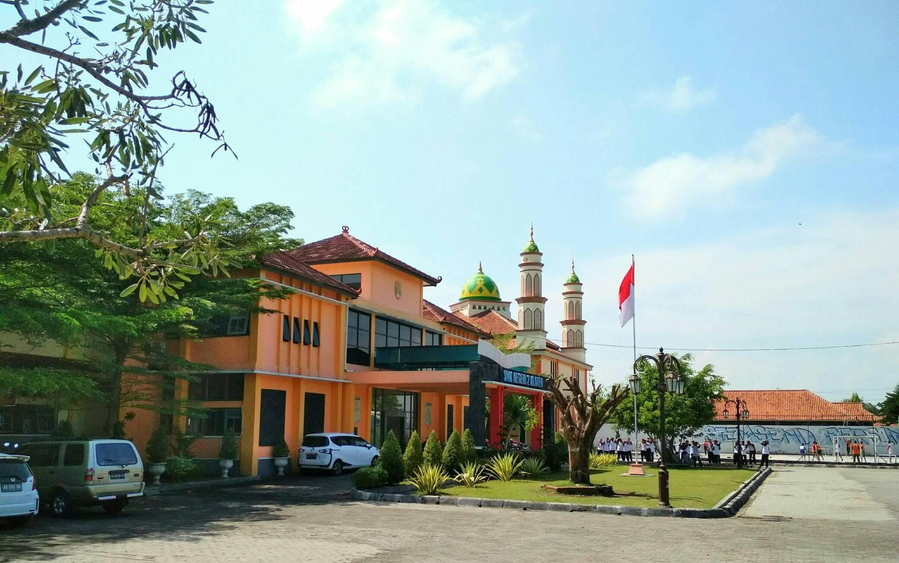

Selamat Datang di WEBSITE RESMI
Menjadikan peserta didik unggul di bidang vokasi yang berkarakter mulia, berdaya saing, berintegritas, dan cinta lingkungan
SMK Negeri 2 Klaten adalah sekolah yang memiliki komitmen untuk menghasilkan lulusan yang siap kerja, berjiwa wirausaha, cerdas, kompetitif, dan memiliki jati diri bangsa, serta mampu mengembangkan keunggulan lokal dan dapat bersaing di pasar global.
Selengkapnya tentang kami ➜